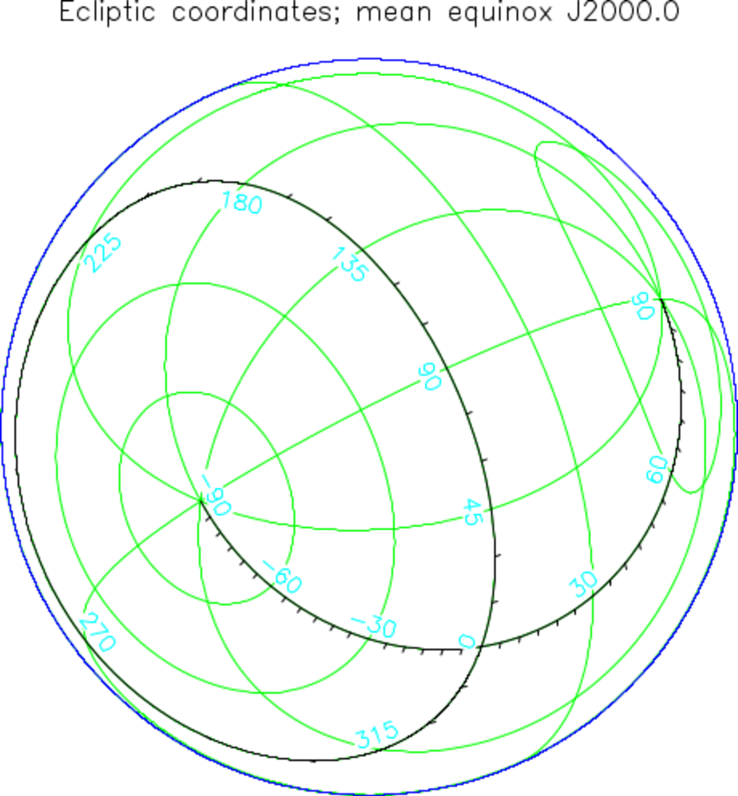
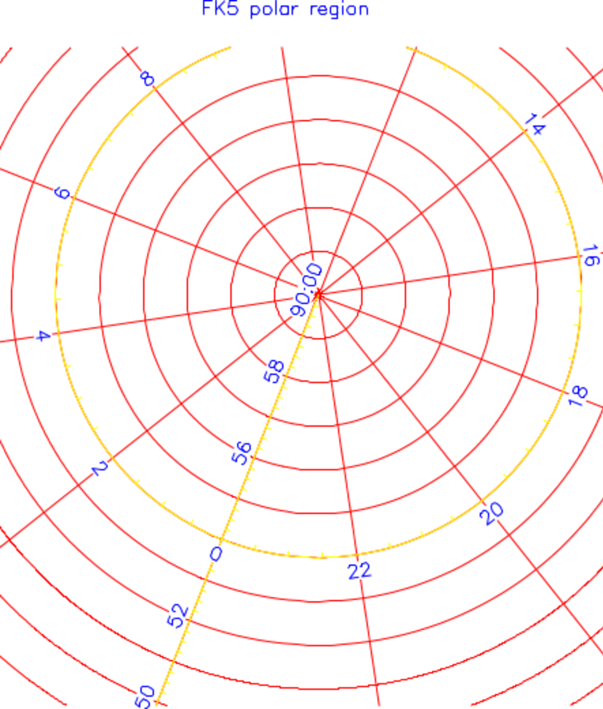
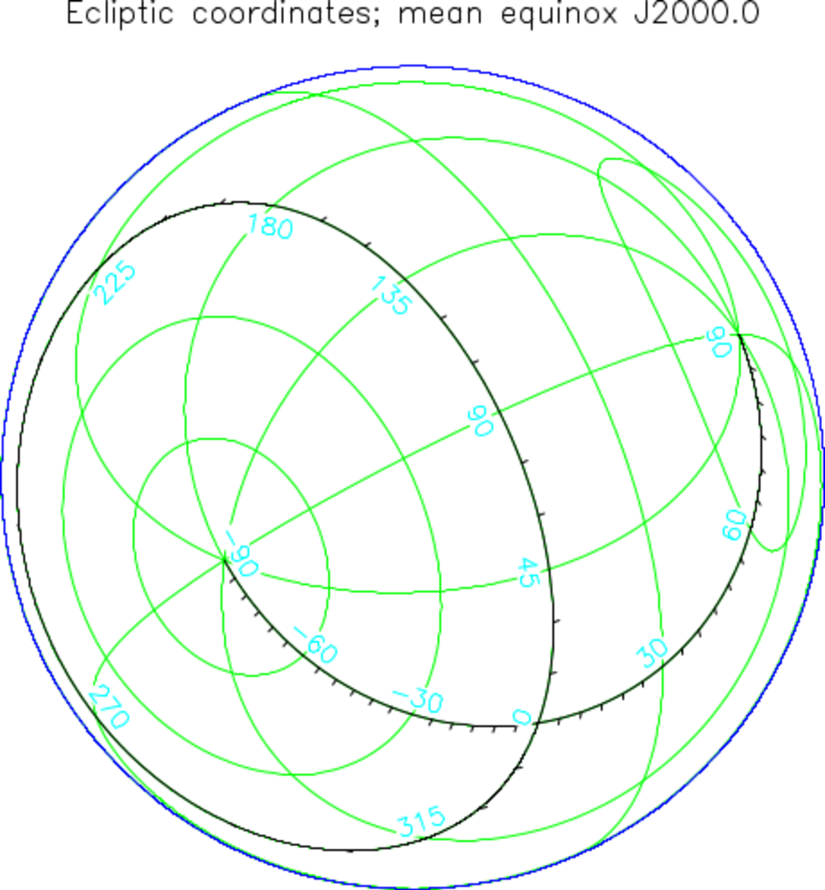
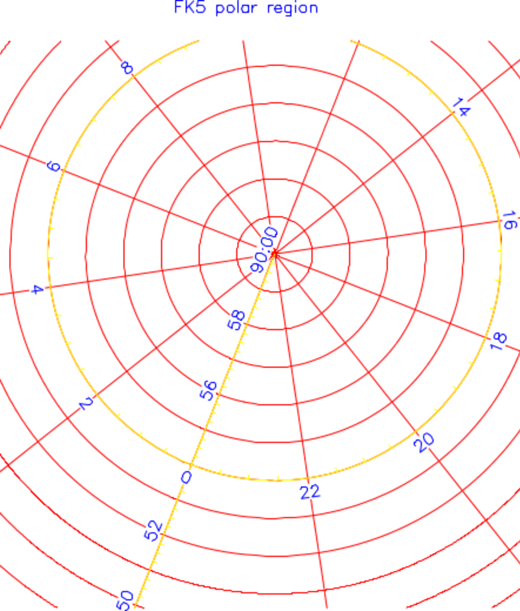

SUN/211.27
Starlink Project
Starlink User Note 211.27
R.F. Warren-Smith & D.S. Berry
26th October 2016
Copyright (C) 2014 Science & Technology Facilities Council
AST
A Library for Handling
World Coordinate Systems
in Astronomy
V8.3
Programmer’s Guide
(C Version)
 


